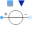
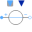

SourcesAC multiphase sources |
|
Package Contents
|
Constant multiphase AC voltage |
|
|  |
Variable multiphase AC voltage |
|  |
Variable multiphase AC voltage with reference angle input |
|
Voltage source with integrated frequency sweep |
|
|
Constant multiphase AC current |
|
|
Variable multiphase AC current |
|
|
Variable multiphase AC current with reference angle input |
|
|
Current source with integrated frequency sweep |
Information
This information is part of the Modelica Standard Library maintained by the Modelica Association.
This package hosts sources for quasi stationary multiphase circuits. Quasi stationary theory can be found in the references.